Генерация отчета Соцпаспорт стандарт Бодайбо
Все показатели считаются в 5 разрезах: по классам, по номерам классов, по возрасту, по годам рождения, по полам. В этом отчете подсчитываются следующие показатели:
Общее количество школьников, Кол-во детей, охваченных горячим питанием в школе, Дети работников школы, Состоящие на учёте в ПДН, Состоящие на учёте в КДН, Состоящие на ВШК, Занятые дополнительным образованием, С низким материальным обеспечением, Опекунские семьи, Многодетные семьи, Дети ОВЗ, Дети ОВЗ занятые допобразованием, Дети инвалиды, Дети инвалиды занятые допобразованием, Неполная семья воспитывает мать, Неполная семья воспитывает отец, Количество детей, занимающихся различными видами дополнительного образования (по видам), Количество детей, занимающихся различными видами летней занятости (по видам.
Также формируется файл, в котором для каждого показателя в Соцпаспорте на отдельных листах указаны списки школьников, на основе которых было получено это значение. То есть если в Соцпаспорте указано что 6 школьников находятся в опекунских семьях на соответствующем листе будет указан список из школьников с их полными данными.
Генерация отчета Контингент стандарт Бодайбо
Все показатели подсчитываются в разрезе номеров классов и ступеней. В этом отчете подсчитываются следующие показатели:
Численность детей, для которых русский язык не является родным, Численность детей, состоящих на различных видах учёта (внутришкольный, КДН и т.д.), Число семей, где родители или единственный родитель в неполной семье имеют профессиональное образование, из них: высшее профессиональное, среднее или начальное профессиональное, один из родителей имеет высшее, а другой - среднее или начальное профессиональное образование, Число семей, где только один из родителей имеет профессиональное образование ,а второй не имеет профессионального образования (неполные семьи не учитываются), из них: высшее профессиональное, среднее или начальное профессиональное, Численность детей из неполных семей, Численность детей, имеющих гражданство отличное от РФ, из них граждане:Украины, Белоруссии, Таджикистана, Туркменистана, Узбекистана, Азербайджана, Казахстана, Киргизии, других стран, Численность обучающихся вне организации, в форме семейного образования, в форме самообразования.
Также формируется файл, в котором для каждого показателя в отчете по контингенту на отдельных листах указаны списки школьников, на основе которых было получено это значение. То есть если в отчете по контингенту указано что у 106 школьников один из родителей имеет высшее, а другой - среднее или начальное профессиональное образование на соответствующем листе будет указан список из школьников с их полными данными.
Генерация настраиваемого отчета
Пользователь создает файл xlsx в котором, указывает название колонок и значения в этих колонках которые ему необходимо подсчитать.После этого программа создает отчет по указанным пользователем колонкам и значениям в разрезе классов, номеров классов, текущего возраста, года рождения, пола. Также создается файл со списками школьников, на основе которых были получены данные в получившихся сводах.
Поиск ошибок в персональных данных школьников
Программа ищет ошибки и незаполненные ячейки в колонках:Пол, СНИЛС, Серия_свидетельство_о_рождении, Номер_свидетельство_о_рождении, Дата_выдачи_свидетельства, Кем_выдано_свидетельство, Дата_рождения, Серия_паспорта, Номер_паспорта, Дата_выдачи_паспорта, Код_подразделения, Кем_выдан, Адрес_регистрации, Фактический_адрес,ФИО.
Если текущий возраст школьника меньше 14 лет, то программа проверяет колонки Серия_свидетельство_о_рождении, Номер_свидетельство_о_рождении, Дата_выдачи_свидетельства, Кем_выдано_свидетельство.
Если текущий возраст школьника равен или больше 14 лет, то программа дополнительно проверяет у такого школьника колонки Серия_паспорта, Номер_паспорта, Дата_выдачи_паспорта, Код_подразделения, Кем_выдан.
Это сделано чтобы не было ложных срабатываний для школьников младше 14 лет.
Общий файл
Создание общего файла, содержащего данные всех школьников из всех файлов включая данные по образовательным и прочим мероприятиям (при условии заполнения соответствующих листов). При этом для каждого школьника автоматически добавляются следующие данные: СНИЛС в формате ХХХ-ХХХ-ХХХ ХХ, СНИЛС в формате ХХХХХХХХХХХ, текущий возраст, совершеннолетний или несовершеннолетний, порядковый номер месяца рождения, название месяца рождения, год рождения, категория Росстат, фамилия, имя, отчество, ФИО в родительном падеже, ФИО в дательном падеже, ФИО в винительном падеже, ФИО в творительном падеже ФИО, в предложном падеже, инициалы в 4 форматах, инициалы в 4 форматах по различным падежам.
Частотная таблица по каждой колонке общего файла
Подсчитывает сколько раз то или иное значение встречается в каждой из колонок. Предназначена для поиска дубликатов в персональных данных и быстрой аналитики
Создание файла с данными льготников для внесения в шаблон ЕГИССО
Дополнительная опция
Предварительно заполняется файл с параметрами ЕГИССО где для каждого желаемого статуса, устанавливается соответствие с данными ЕГИССО при этом можно установить в качестве льготы номер класса. Например, для всех второклассников льготу на проезд
При генерации файлов если школьнику меньше 14 лет используются данные свидетельства о рождении, если школьнику 14 и больше то используются паспортные данные
Создаются следующие файлы и папки:
Файл ЕГИССО перс данные Ошибки – в этом файле указаны все школьники в чьих данных найдены ошибки, которые не позволят загрузить их данные в егиссо. Неправильные СНИЛС, пропущенные ФИО, неправильная запись пола, ошибки в датах рождения.Для удобства исправления ошибок добавлены названия файлов, льгот, статусов льгот. При этом на листе Несколько льгот будут все школьники, у которых 2 и более льготы из файла параметры ЕГИССО.
Файл ЕГИССО Не найденные льготы – в этом файле будут все, у кого в колонке, указанной в файле параметрах ЕГИССО на листе Соцпаспорт значения отличаются от указанных в этом файле.
Файл ЕГИССО полные данные – в этом файле находятся подготовленные данные для внесения в шаблон ЕГИССО.
При этом значения персональных данных, начинающихся с нуля сохранены так чтобы они не исчезли. СНИЛС приведены в формат требуемый ЕГИССО.
Файл Льготники – этот файл содержит данные льготников каждого класса в удобном для распечатывания виде.
Первый лист это общий список льготников а остальные листы это льготники каждого класса по отдельности.
Папка Льготники по классам - в этой папке содержатся списки льготников по классам в отдельных файлах, чтобы было удобнее распечатывать и работать с ними.
В каждом файле лист Общий список и листы с данными по отдельным льготам.
То есть можно распечатать отдельно список льготников по питанию или по здоровью если они есть в классе.
Исправление и поиск ошибок в файлах ЕГИССО
Исправляет неправильное написание СНИЛС, ФИО (написание с маленькой буквы), убирает лишние пробельные символы, проверяет количество цифр в номере свидетельства и паспортных данных, исправляет некорректные написания даты, проверяет корректность заполнения связных колонок, можно обрабатывать сразу много файлов, выделяет строки с ошибками.
Папки со сводами
Создание папок, содержащих своды по колонкам названия которых начинаются со слов Статус_, Подсчет_, Список_. В каждой такой папке создаются своды по классам, номерам классов, текущему возрасту, году рождения, полу, для каждой колонки
Создание общего свода по данным из колонок, начинающихся со слов Статус_, Подсчет_, Список_
Файл Сводка – этот файл содержит в себе краткую выжимку по всем данным в независимости от количества обработанных файлов.
В файле находятся несколько листов:
Лист Основные данные – на этом листе отображены основные показатели, которые можно получить из данных, расположенных на листе Соцпаспорт в каждом из обработанных файлов.
Сюда попадают все данные из колонок чьи названия начинаются на Статус_, Список_, Подсчет_ . То есть вы можете добавлять свои колонки чьи названия начинаются с указанных слов, в таком случае эти данные также будут обрабатываться.
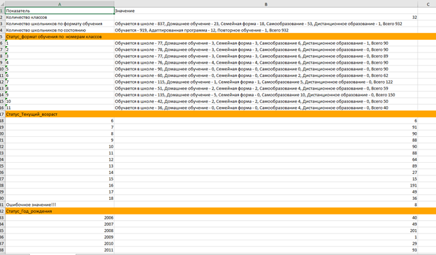 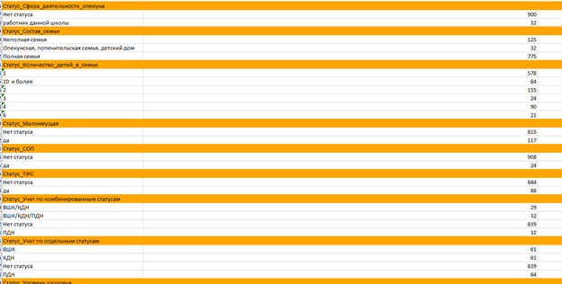Лист Образовательные мероприятия
На этом листе представлена сводка по всем данным из колонок, начинающихся со слова Статус_ расположенных на листе Образовательные мероприятия во всех обработанных файлах.
То есть вы сможете узнать сколько человек приняла участие в том или ином мероприятии, сколько человек из какого класса участвовало в мероприятиях и так далее.
На лист Образовательные мероприятия вы можете добавлять свои колонки Статус_.
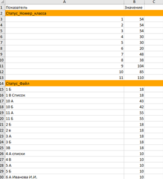 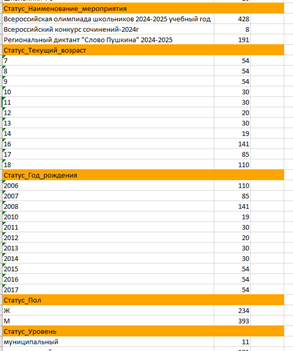Лист Все, кроме образовательных
На этом листе представлена статистика по всем мероприятиям, указанным на листе Прочие мероприятия в обработанных файлах.
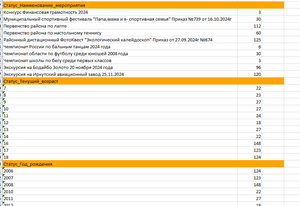 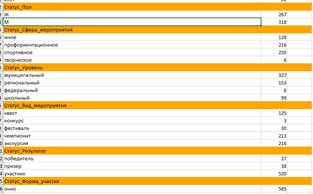 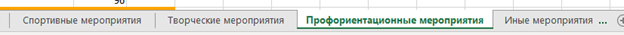На лист Прочие мероприятия вы можете добавлять свои колонки Статус_.
Для дополнительного удобства подсчета мероприятия с разными сферами с этого листа дополнительно распределяются по отдельным листам: Спортивные мероприятия,
Творческие мероприятия, Профориентационные мероприятия, Иные мероприятия.
Поиск ошибок в структуре файлов с данными
Файл Ошибки в файлах – в этом файле указаны те файлы, в которых при обработке были обнаружены лишние или отсутствующие колонки по сравнению с эталонным шаблоном.
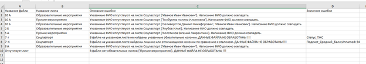Свод по возрастам
В этом файле находятся сводные данные по возрастным категориям школьников такие как: Количество совершенолетних/ несовершеннолетних, количество школьников по возрастам, количество школьников по месяцам, количество школьников по годам рождения, количество школьников по годам рождения. Возраст высчитывается на выбранную пользователем дату.
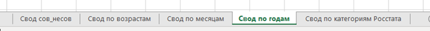 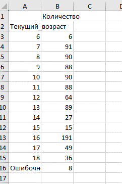 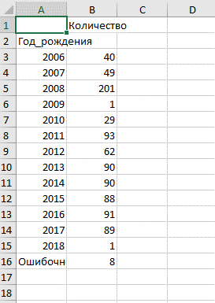Массовая обработка табличных отчетов, путем суммирования значений ячеек в указанных листах и диапазонах
Например, у вас есть 50 отчетов о деятельности образовательных организаций, вам нужно сделать общий отчет подсчитав итоговую сумму для каждой ячейки. С помощью этой функции вы сможете сделать это быстро и просто. Причем вы можете проверить за программой как она получила результат в той или иной строке, колонке.
Массовое объединение таблиц со списочной структурой в одну
Например, у вас есть списки 100 групп студентов с их данными в формате xlsx. Эти списки разбросаны по разным папкам и имеют разные названия, однако названия колонок у них одинаковые. Вручную собирать их очень трудоемкая задача, но с этой программой вам достаточно будет указать эталонный файл, на основе которого будет собираться общая таблица. После чего указать папку, где находятся папки с этими файлами. Программа найдет и объединит все файлы с такими же заголовками, как и у эталонного файла. Программа объединяет и в случае, если в файлах несколько листов с таблицами.
Извлечение данных из таблиц xlsx со сложной структурой
Допустим у вас есть 250 отчетов с одинаковой структурой. То есть вы знаете, что в каждом из 250 отчетов в ячейке J24 находится средний балл ученика за месяц. Используя эту программу вам будет достаточно создать файл xlsx с настройками, указать в нем из каких ячеек вам нужно получить данные, после чего программа предоставит вам данные из каждой указанной вами ячейки в каждом из 250 файлов. При этом вы сможете увидеть из какого файла взято то или иное значение.
Разделение таблицы на несколько частей по уникальным значениям выбранной колонки
Для примера у вас в одном большом файле есть список логинов и паролей для тестирования для каждой группы. Вам нужно распечатать логины и пароли для каждой группы по отдельности. С помощью это функции вам будет достаточно указать порядковый номер колонки, по которой вы хотите разделить таблицу, название листа, где находится таблица и нажать кнопку обработки.
Программа в зависимости от выбранного режима отфильтрует данные по уникальным значения выбранной колонки и сохранит отфильтрованные данные либо в листах одного файла, либо в отдельных файлах.
Поиск различий между двумя таблицами с одинаковой структурой
Например, вам нужно найти разницу между отчетом за 2024 и отчетом за 2025 (какие показатели и как изменились), программа обработает таблицы и предоставит вам в удобном виде все различающиеся показатели, а также насколько отличаются значения в абсолютном выражении и насколько они отличаются в процентах (какова доля в процентах второго значения от первого, насколько в процентах изменились значения).
Создание однотипных документов docx (Word и его аналоги)
Для примера у вас есть список группы из 30 студентов и вам нужно на каждого из них сделать справку, договор, согласие и т.п. Документы отличается только паспортными данными и реквизитами, и чтобы вам не пришлось 30 раз создавать документ на каждого, вы можете использовать эту программу. Вам нужно будет только указать таблицу с используемыми данными формата Excel и создать шаблон документа в Word указав в этом шаблоне в двойных фигурных скобках {{}} названия колонок из файла с расширением xlsx. После чего программа, беря данные из таблицы и подставляя эти данные в {{}} в шаблоне, создаст вам столько документов сколько строк есть в таблице с сохранением форматирования шаблона.
Можно создавать pdf версии создаваемых документов, можно создавать объединенные файлы (т.е. вместо 100 отдельных документов у вас будет один файл в котором будет находиться 100 документов).
Также можно задавать структуру папок в которых будут сохраняться документы. Достаточно просто указать не более трех порядковых номеров колонок по которым вы хотите рассортировать документы
Вычисление текущего возраста, разбиение по категориям, в том числе совершеннолетние/несовершеннолетние, сводные таблицы по возрастам
Часто при создании отчетов возникает проблема разбиения людей по определенным возрастным категориям и вычисления текущего возраста на определенную дату.
Веста высчитывает текущий возраст на произвольную дату, номер месяца рождения, название месяца рождения, год, категории 1-ПК,1-ПО, СПО-1, Росстат после чего добавляет эти данные в исходную таблицу. Также создаются сводные таблицы по этим показателям.
Создание пакета однотипных документов docx (Word и его аналоги)
Например, вам нужно создать не один тип документов на своих слушателей, клиентов, образовательные программы и т.п. а сразу целый набор сопроводительной документации. Все что вам нужно это собрать шаблоны документов, которые вам нужно создать в одну папку, затем разложить эти шаблоны по подпапкам. Запустить программу, указать таблицу Excel (xlsx) с данными, указать папку с всеми шаблонами и сгенерировать сразу весь пакет документов.
Структурирование данных
Функция предназначена для того, чтобы извлечь и структурировать построчно данные, относящиеся к одинаковым значениям в определенной колонке. Объяснить проще на примере, у вас есть 30 учебных планов и вам нужно получить все строки, где встречаются одинаковые предметы с указанием названия файла, где была найдена такая строка для последующего использования в тарификации. Или у вас 100 табличных отчетов и вам нужно найти все данные по каждому отдельному продукту или человеку.
Поиск и исправление ошибок в файлах ЕГИССО
Предназначена для массовой обработки заполненных шаблонов ЕГИССО в формате xlsx и xlsm
Исправляет неправильное написание СНИЛС, ФИО (написание с маленькой буквы), убирает лишние пробельные символы, проверяет количество цифр в номере свидетельства и паспортных данных, исправляет некорректные написания даты, проверяет корректность заполнения связных колонок, можно обрабатывать сразу много файлов, выделяет строки с ошибками. Проверяет соответствие категорий получателей категории ЛМСЗ. Ищет дубликаты ФИО, СНИЛС, документов. Считает частотные таблицы по каждой колонке обработанных файлов. Для удобства проверки добавляет текстовое наименование для категорий ЛМСЗ и категорий получателей.
Поиск дублей в файлах выверки фактов назначений по пересекающимся периодам ЕГИССО.
Ищет дубли по колонкам Код ЛМСЗ, Период назначения С, Период назначения ПО и одинаковыми суммами. Ищет записи для ручной проверки с дублями в колонках Код ЛМСЗ, Период назначения С, Период назначения ПО и разными суммами. Проверяет заполнение колонки Период назначения ПО. Создает файл в котором указан статус СНИЛС(совпадает со СНИЛС лица основания, различается со СНИЛС лица основания, СНИЛС лица основания не заполнен). Создает сводные таблицы по суммам в разрезе наименований ЛМСЗ и СНИЛС. Может обрабатывать несколько файлов, а также несколько листов в этих файлах.